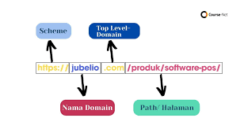

Contoh hosting di Indonesia Niagahoster: Niagahoster adalah penyedia layanan web hosting di Indonesia yang melayani lebih dari 2 juta situs online dengan paket Unlimited hosting, Cloud hosting, dan VPS hosting. Yang membuatnya menonjol adalah penerapan panel kontrol yang mudah digunakan untuk hosting. Area klien dan panel kontrol untuk hosting bersamanya paling ramah pengguna yang pernah kami temui. Ia juga memiliki Softaculous untuk instalasi CMS sekali klik. Anda bahkan tidak perlu menjadi ahli untuk menikmati manfaat hosting VPS berperforma tinggi. Niagahoster menawarkan paket VPS CyberPanel yang menggunakan panel hosting yang didukung OpenLiteSpeed yang intuitif dan mudah dikelola. Namun, Niagahoster memang membutuhkan komitmen yang besar, karena Anda hanya bisa mendapatkan harga terbaik jika Anda memutuskan untuk membayar paket jangka panjang terlebih dahulu. Perbedaan harganya sangat besar sehingga jika Anda memutuskan untuk membayar bulanan (jangka waktu penagihan sesingkat mungkin) dibandingkan setiap dua tahun (yang paling lama), Anda akan membayar empat kali lebih banyak. Itu sebabnya kami menyarankan Anda memastikan bahwa Anda yakin memilih Niagahoster sebelum berlangganan. Keseimbangan kinerja, fitur, dan harga juga menjadikannya cocok digunakan untuk usaha besar seperti toko online atau portal berita besar. DomaiNesia: DomaiNesia unggul dengan menawarkan jumlah ruang penyimpanan yang mengesankan dengan harga terjangkau. Dalam pengujian kami, ia juga memiliki kecepatan kinerja yang sangat baik. Namun, uptime 99,87% masih jauh dari harapan. Hosting ini cocok untuk blog dan profil perusahaan atau sekolah. Jika Anda ingin membangun toko daring yang kompleks, situs Anda tentunya akan lambat sekali. Layanan pelanggan DomaiNesia ramah dan cepat membalas pertanyaan kami. Namun, mereka lebih memilih memberikan pranala luar dibandingkan langsung membantu masalah yang kami hadapi. IDWebHost: Layanan hosting IDWebhost cukup handal dan harganya juga terjangkau, meski fiturnya biasa saja, terutama pilihan CPU dan RAMnya. Performa servernya (uptime dan response time) harus diperbaiki lagi agar klaim mereka sebagai hosting terbaik dapat dijustifikasi. Untungnya, IDWebhost banyak menyediakan bonus dan keuntungan lain yang bisa menutupi kekurangan tersebut. Pelayanan pelanggan yang cepat tanggap juga siap membantu Anda mengoptimasi situs yang Anda miliki. Anda juga bisa mempelajari sendiri cara mengelola hosting Anda di basis pengetahuan dan blog IDWebhost. Qwords: Qwords menawarkan teknologi cloud hosting yang membantu meningkatkan keamanan, stabilitas, dan kinerja situs dibandingkan shared hosting biasa. Ia juga jauh lebih baik dalam menyeimbangkan lalu lintas yang sibuk, sehingga ideal untuk situs kompleks dengan banyak pengunjung. Seperti Hostinger dan Niagahoster, Qwords dilengkapi dengan teknologi server LiteSpeed, yang secara signifikan meningkatkan kinerja situs berbasis CMS seperti WordPress. Qwords juga hadir dengan jaminan uptime 99.99% dan mencetak uptime sempurna 100% sepanjang pengujian kami, sehingga dapat dipastikan akan mampu memberikan hasil yang konsisten. Qwords menawarkan paket hosting fleksibel yang mencakup domain gratis dan sertifikat SSL, pembuat situs web, penginstal sekali klik Softaculous, serta alat SEO dan pemasaran. Pilih paket yang sesuai dengan kebutuhan Anda, dan Anda dapat membayar secara bertahap selama satu bulan, 3 bulan, 6 bulan, atau tahunan. DewaWeb: Penyedia hosting yang berfokus pada hosting premium.
Contoh hosting di luar negeri SiteGround: SiteGround juga merupakan salah satu penyedia layanan hosting terbaik di dunia. SiteGround menyediakan berbagai jenis paket hosting dengan fitur-fitur yang lengkap dan canggih. SiteGround juga terkenal dengan performa server yang sangat baik dan cepat. Selain itu, SiteGround juga menyediakan layanan pelanggan yang sangat baik dan responsif. Bluehost:Bluehost adalah penyedia layanan hosting yang sangat populer di dunia. Bluehost menyediakan berbagai jenis paket hosting yang sesuai dengan kebutuhan website Anda. Selain itu, Bluehost juga menyediakan fitur-fitur canggih seperti WordPress hosting, VPS hosting, dan dedicated hosting. Bluehost juga terkenal dengan layanan pelanggannya yang sangat baik. InMotion Hosting: InMotion Hosting adalah salah satu penyedia layanan hosting terbaik di dunia yang berbasis di Amerika Serikat. InMotion Hosting menyediakan berbagai jenis paket hosting dengan fitur-fitur yang lengkap dan canggih. InMotion Hosting juga terkenal dengan performa server yang sangat baik dan cepat. Selain itu, InMotion Hosting juga menyediakan layanan pelanggan yang sangat baik dan responsif. DreamHost: DreamHost adalah salah satu penyedia layanan hosting terbaik di dunia yang berbasis di Amerika Serikat. DreamHost menyediakan berbagai jenis paket hosting dengan fitur-fitur yang lengkap dan canggih. DreamHost juga terkenal dengan performa server yang sangat baik dan cepat. Selain itu, DreamHost juga menyediakan layanan pelanggan yang sangat baik dan responsif.
